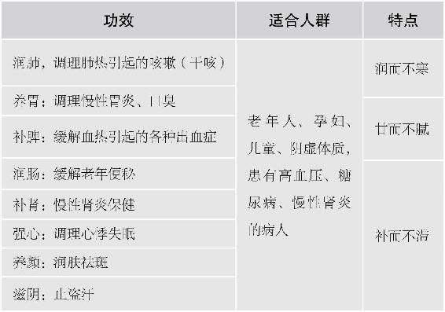
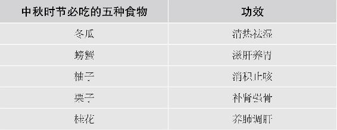

白露，每年的9月7日到9日之间交白露节气，此时天渐转凉，露渐浓，引得游子起思乡之意。不妨给远方的父母发个信息，提醒他们珍重加衣，将夜里盖的夏季凉被换成秋被。古人说，伤春悲秋，秋天的忧思伤的是五脏中的肺。秋风凉，风寒袭表，袭击的也是我们的肺脏。因此，白露时节的养生，要以养肺为先，以清润为主，不宜大补。
6.白露时节，一岁露从今夜白，易悲秋，宜养肺
白露，在每年9月7日到9日。这是一个很有诗意的节气：一岁露从今夜白。真的好像是一夜之间发生了变化。白露之后进山游玩，一定要赶在日出时起早出门，你会发现漫山遍野的草木上好像落了一层白白的薄雪似的，阳光一照，闪着白茫茫的亮晶晶的光，那就是凝结的露水。成千上万颗露水凝聚在一起，远看好似白色，所以这个时节叫白露。
白露时，昼夜温差达到顶点。此时天渐转凉，露渐浓，引得游子起思乡之意。不妨给远方的父母发个信息，提醒他们珍重加衣，将夜里盖的夏季凉被换成秋被。古人说，伤春悲秋，秋天的忧思伤的是五脏中的肺。秋风凉，风寒袭表，袭击的也是我们的肺脏。因此，白露时节的养生，要以养肺为先。
养肺对很多人来说太重要了。特别是平常话说得比较多的人，比如教师、销售、主持人等，这类人群常有气短、慢性咽炎等症状。
秋天养肺也要分阶段。白露节气的15天，养肺以清润为主，不宜补。吃梨是很好的选择。
7.白露时节的养肺食方：红酒炖梨
秋天的应季水果—梨是专门润肺的。但梨偏寒性，有内热的人吃很合适，老人、胃寒或是寒凉体质的人就不宜过多生食。
许多人爱吃冰糖炖梨，热热地吃下去觉得舒服一点。不过，对于体弱的老人和偏寒体质的人，加热也不能去除梨的寒性。
我们所说的食物具有寒、热、温、凉四性，并非是指物理的温度，而是指吃下去之后对人体所起的作用。含淀粉质高的食物，煮熟之后淀粉变性，能减轻寒性。而像梨这样水分丰富的水果，加热之后，依然是寒性的。正所谓江山易改，本性难移，不是说简单地改变温度就可以解决寒凉的。就好像大闸蟹是寒凉的，你把它蒸熟了，它还是一样的寒。
怎么吃梨才能让老人家、体弱、体寒的人达到润肺而又不寒凉的效果呢？可以用红酒来炖梨。
红酒炖梨
原料：梨、红酒、丁香粉（没有可不放）。
做法：
① 把梨用面粉水泡15分钟后洗净，连皮带核一起切成小块（核、皮不要扔）。
② 锅内放入梨块，撒点丁香粉，倒入少量红酒，到淹没梨块一半的位置，红酒量不要多。
③ 不要盖锅盖，用小火炖煮。煮到梨块变红，锅内还剩一点点汁的时候，马上关火起锅。
功效：润肺，美肤。
允斌叮嘱
① 有三种情况不宜吃：痰多不要吃；风寒感冒不要吃；腹泻不要吃。
② 红酒的量不用放太多，梨的水分很多，煮的时候会出汁。
③ 要把酒和梨汁煮到快干时再起锅。因为这道甜品吃的是梨，不是喝汤。
④ 不要用炒菜的生铁锅（会起氧化反应），用普通的不锈钢锅就可以。
⑤ 煮的时候不要盖锅盖，这样可以把酒气完全散发出来。
⑥ 煮梨的红酒，用最普通的就可以了，煮过之后，就是再名贵的红酒，它的风味也丧失了。甚至还有朋友反馈过，他们用特别好的红酒煮了以后，发现并不好吃。大概是这种红酒的年份比较久，橡木的味道比较重的缘故。我用的红酒是自己酿制的，煮出来的味道反而比买来的红酒好。
⑦ 煮梨时，加上丁香粉能增强护胃的作用。丁香是炖肉的调料，也是一味中药，超市和药房都可以买到。如果没有丁香粉，可以用两三个整个的丁香。没有丁香，不放也是可以的。
⑧ 这道甜品凉吃、热吃都可以，吃起来软软的，味道很不错。酒味都煮掉了，老人、小孩、女性都可以吃。有人问，怕酒精能不能吃呢？如果你可以吃放料酒的菜，那么吃这个就没有问题。
以斯贴：谢谢陈老师每个节气的提醒，做了红酒炖梨，很好吃。梨子红红的，没有多少酒气，喝了感觉胃里暖暖的，很舒服，再次谢谢陈老师！
问：刚吃了超好吃！我可是一个不能喝酒和不爱吃梨的人。平时作为果品甜品也能吃吧？
允斌答：当然可以的。
问：有慢性咽炎能吃吗？慢性咽炎真的是太难受了，有一年了吧，快折磨得我受不了了。
允斌答：可以的。
问：前天我烧了这道红酒炖梨， 结果以失败告终。我放了2个梨， 烧了20分钟， 一开始用大火烧开， 后改小火 ，结果汤汁很多， 没有收干就起锅了， 可能是梨切太小块了， 梨都化了结果烧出来的不好吃，好浓的酒味。
允斌答：少放酒， 汤汁收干点。
问：哺乳期可以吃吗？
允斌答：可以的。
问：如果小孩感冒咳嗽时间比较长，能吃梨吗？
允斌答：要看他有没有痰，如果有的话，是不宜吃梨的，只能用梨皮煮水喝。
如果孩子是没有痰而有清鼻涕、还咳嗽的话，那可能是受了一点风寒，这个是风寒咳嗽，跟干咳是两码事。用葱白连须，加上萝卜皮和梨皮，给他煮水喝。用量是1个梨的皮，半个萝卜的皮，葱白是要连根须的，用3根。如果孩子不喜欢葱的味道，可以加一点点糖。喝了以后，风寒散去，清鼻涕会很快止住，咳嗽也能缓解。如果孩子是长期咳，有可能是百日咳，可以用别的方子。
问：请问老师用什么材质的锅煮好呢？
允斌答：都可以，最好不用炒菜的铁锅。
秋分，每年9月的22日到23日交秋分节气。这是秋天的一个重要转折点。“燕将明日去，秋向此时分”， 此时，燥气袭人，主要表现在三个部位：第一是呼吸系统燥，鼻子干，口干，咽喉干；第二是皮肤燥；第三是肠道燥，肠道燥了就会大便干结和便秘，很痛苦，特别是老年人。
对付这种燥，我们不仅要润燥，还要滋肾阴。
8.“金气秋分”，润燥为先
每年9月的22日到23日，太阳直射在赤道上，交秋分节气。
秋分是秋天的一个重要转折点。“燕将明日去，秋向此时分”，一个“分”字意味着昼夜平分、寒暑交替。到了秋分，秋天就过去一半了。在秋天的前半段，养生的重点是补气、健脾、祛湿；在秋天的后半段，我们养生要偏重于滋阴、补血、润燥。
南方北方的燥不一样，润燥方法也不同
仲秋之后要防燥，所谓的燥，也可以理解为干的意思。相对来讲，北方的燥更严重，使人全身都燥，不仅表现为呼吸道很干，还包括皮肤有干纹、肠道会便秘。南方会好一些，相比北方空气的湿度比较大，一般燥在身体上部，也就是口鼻咽喉这里会感觉燥。
所以，我们生活在南方和北方，润燥的方法是不一样的。如果在北方，就需要尽量地去润肺，但在南方就要注意适可而止。比如说在广东，一年四季都比较湿，一般人只需要在秋天少吃燥湿的食物就可以了。
秋分之前防温燥，秋分之后防凉燥
我们身体很多地方都怕湿，但偏偏肺不是，肺是一个很娇气的脏腑，最是喜润恶燥。而秋天的天气又非常的燥，所以，秋天的时候我们要润肺，这样冬天才不容易得呼吸道的病。
不光是肺有燥，皮肤也有燥，还有其他脏腑也有燥，有外燥还有内燥。
秋天我们要防的主要是外燥—温燥、凉燥，因为这跟气候有关系。
在秋分前，也就是秋天的前半部分，这个时候的燥里面有一点热，属于温燥；而秋分之后，凉气袭人，就是凉燥。
对于温燥，我们要寒凉润肺。但如果是凉燥，就要温和润肺了。
除了外燥分温凉以外，内燥也分温凉。
比如，咽喉红肿、痛、干，咳出来的痰是黄的，这种就是温燥。只是觉得咽喉干，但没有红肿，通常还有点干痒干痒的感觉，然后伸出舌头来，也不发红，这就是凉燥。
有的朋友说咽喉经常痛，然后这两天又觉得干痒，到底是温还是凉呢？要知道人是一个很复杂的综合体，很多时候，我们可能这个脏腑热，那个脏腑寒。如果咽喉常肿痛，那是长期有内热。早上出门着点凉，流清鼻涕，嗓子痒，这是因为又有了表寒。
这样既有长期隐患，又有临时症状的身体如何调理呢？按中医的做法，急则治其标，缓则治其本。像上面那种表现，就是先去表寒，再慢慢清除内热，这是中医治病的一个基本原则。
说到润燥，很多人都觉得仅仅是润肺，其实，燥在秋天主要表现在人的三个部位：第一是呼吸系统，呼吸系统很容易燥，鼻子干、口干、咽喉干；第二是人的皮肤；第三个是肠道。肠道燥了就会大便干结和便秘，很痛苦，特别是老年人，这种燥除了润肺，还要润肾脏，滋肾阴。阴代表人体的水液，水液充足，肠道得到滋润，大便就畅通了。
要注意，燥跟人们常说的火大、上火不是一回事。燥是干，是从湿度的程度上说的，而火是从温度上来说的。热盛可以为火，而天凉了才会有燥。
好比说皮肤，老年人到了秋冬季的时候，小腿皮肤非常干燥，感觉发痒，挠了以后还有白色的皮屑飘落，这就是燥，但并没有火，天冷了才会出现，寒性体质的老人有这种现象的也很多。
肺当然是管皮肤的了，可如果只润肺的话，小腿的燥是解决不了的。什么原因呢？因为皮肤干跟肾有关系。所以我们还要滋肾阴，才能够真正解决这种全身干燥的情况。
9.秋天有三燥（肺燥、肠燥、皮肤燥）， 会吃银耳就能消
治秋天人身上的三燥—肺燥、肠燥、皮肤燥，都要靠滋阴来解决。
有人说，六味地黄丸滋阴不是挺好的吗？但是有一个问题：不是真正肾阴虚的人，六味地黄丸是不能随便用的。
因为中医讲的肾阴虚、肾阳虚都是病，而一般的人没有达到病的程度，中医所谓的滋阴助阳，那是从补益身体而非从治病的角度说的。六味地黄丸是一种治病的药，不能用来补益身体，用错了就会有麻烦。曾经有人以为六味地黄丸补肾好，大量地服用，最后导致肾衰竭。
在秋季，我们滋阴首先是滋养肺阴，还有胃阴、心阴和肾阴。
要想安全平和地滋养五脏之阴，银耳是不二之选。中国人自古以来都把银耳当作滋补上品，而吃得最多的，是古代的皇后。那时银耳是野生的，与燕窝等价。现在，我们每天都可以当“皇后”，因为人工种植银耳，价格便宜了。
银耳是很平和的，所以安全。天天吃，细水长流，一定见效。只要坚持吃一两个月，皮肤真的就是水当当。女人、男人吃了效果都一样好。
10.银耳—平民的燕窝为何了不起

11.求医不如求银耳：如何对症吃银耳
一、清除内热，吃银耳雪梨羹
很多人喜欢把银耳和雪梨一起炖，这样配在一起可以清肺热。不过雪梨有点寒，这种搭配适合内热比较重的人。建议带着梨皮一起炖。
二、口干便秘，吃银耳百合羹
有些人的热是虚热，秋季来了感觉口鼻干燥，这个时候用银耳炖百合比较好，没有那么寒凉，特别适合大便秘结、经常咽喉痛的人。
百合的功效是润肺，能清虚热。如果你有咳嗽，还有一点黏痰，觉得有痰咳不出来，可以用百合来润化。切记痰多的时候不要用百合，否则会起反效果。
银耳百合羹是清热通便的，适合于大便干结型的便秘。有些人大便不是很痛快，但是并不干结，就不适合。特别是吃银耳百合羹后大便稀溏，甚至有要腹泻的感觉，说明你脾胃有点虚，那就不要用百合了。
三、脾虚便溏，吃银耳莲子羹
脾虚的人，有个特点，不管大便是否畅通，便出来总是有点不成形，这就是中医所说的便溏。这种人适合吃银耳莲子羹。莲子配上银耳，不仅增加了健脾的功效，也增强了养心的作用，特别是补心气。莲子的选择有讲究，便溏明显的人，可以选择去芯的莲子，其他的人，选择带芯的莲子比较好。吃莲子带着芯，可以防止上心火，也不容易引发便秘。
四、气血两虚，吃银耳大枣羹
很多人问银耳能不能配大枣，这个不是我特别推荐的一种搭配。因为银耳本身很润，而大枣很湿热，两个加在一起，长期吃容易生湿气，特别是有湿疹的人不要这样吃。但是有少部分人气虚血也虚，整个人枯黄干瘦，那是可以这样搭配的。
五、血虚体寒，吃银耳桂圆羹
在补血食物中，相比大枣来说，桂圆更加适合搭配银耳。桂圆补血的效果极好，又是温性的，可以平衡银耳的凉性，是寒性体质人的好选择。我自己也偏爱这种搭配，喜欢多多放桂圆，熬出来的银耳羹很甜，无需放糖就很好吃了。
六、养脾胃，吃银耳大米粥
一位读者在我的微博留言，说了一个方法。这位朋友自己在家做实验，熬银耳的时候，放些大米进去一起熬。熬出来的银耳粥别有一番滋味。我试做了几次，发现这个方子很简便。如果早上有喝粥习惯的朋友，可以试试在熬粥的时候加些银耳进去一起熬，一举两得。
吃腻了甜味的银耳羹，不妨做点这个换换口味。另外，脾胃较弱的朋友，喝这个粥养胃也不错的。
七、想补肾，吃银耳枸杞羹
以上银耳的各种搭配各有其调理的重点，如果搞不清楚自身的体质，或者是体质平和，没有明显亚健康症状的人，吃银耳怎么搭配呢？有一个万能搭配法：用枸杞来配。枸杞跟银耳是绝配。银耳是滋阴的，枸杞平补阴阳，两种都补肾，放在一起，就是相得益彰。
如果是一家老小一起喝银耳羹，各人体质不同，那就可以放枸杞，不管是肾阴虚、肾阳虚、肾气虚、肾精虚，甚至肾不虚，都可以喝它。
nuan：银耳泡出来晶莹剔透，煮20分钟就糯了，补水棒棒的。
LY：冬季的百日银耳，坚持每天吃到立春，整个冬天皮肤滋润，不干燥。
lucy：银耳莲子汤，我从去年立秋吃到现在，之前一直都会大便不成形，刚开始2个月变化不明显，再后来我才突然发现自己越来越好，心里说不出来的高兴。这个问题困扰我多年了，我也知道是脾虚、运化功能差，没想到简简单单的几样食材就能解决，关键在于简单明了又容易坚持。
喜悦：银耳汤不仅滋阴而且安神，对晚上的睡眠特别有帮助。这款食方对我而言另外一个特别好的效果是，在季节交替的时候不容易感冒了，这是在看陈老师的书之前绝对没有的现象，由衷地感谢陈老师！
爱上生活：吃了秋天的银耳汤，发现皮肤变光滑了，嘴唇也不干燥了。冬天手上都没有静电了，以前每年冬天身上总是有静电，开个门、拿个东西啊总是胆战心惊的。
家有小宝：以往秋冬季，皮肤就容易瘙痒。按您的方子坚持吃银耳，偶尔也会断几天，皮肤瘙痒好很多，基本不痒了。
Amy：老师推荐的银耳羹，我会从秋分喝到立春，结果我的皮肤比以前要滋润很多。母亲也说，喝了银耳羹脚后跟也不脱皮了。
铭：每到秋分我也开始吃银耳了！生完孩子后，屁股上留了很多孕娠纹，摸起来很粗糙，有一粒一粒的感觉。每隔一段时间，我都会用磨砂膏护理一下，但过几天又会变粗糙。自从秋分很认真地吃银耳后，惊奇地发现屁股摸起来滑滑的，没有一粒一粒的感觉了！磨砂膏也没有用过。
阿安：女儿以前一入冬，早上起床就要咳嗽几声，秋天到立春时节的银耳羹，坚持喝一个冬季后，到第二年冬季就不咳嗽了。
平。：我用豆浆机打成银耳糊，很细很滑，口感像冰粉，又快又方便，还可以敷脸。
飞飞：银耳真是个宝，前两天喉咙干得吐血，昨天喝了一大碗银耳枸杞，因为家里没买梨，临时放了枸杞，没想到效果超棒，今早起来没有血，也不觉得干痒了。
玉兔：老师您好！以前，我的皮肤非常干燥，一到秋天就有干纹，一直脱皮。跟着老师学养生，今年到现在没干纹也不脱皮，皮肤美哒哒的！太谢谢老师了！

nini问：老师，从怀孕到生产，可以每天吃银耳羹吗？搭配新鲜芡实，每天空腹一碗。
允斌答：银耳可以每天吃，芡实要根据情况。
A秘制现焖猪蹄鸡腿鸡爪鸡翅问：陈老师，孕晚期可以在银耳羹里放莲子、枸杞吗？
允斌答：可以的。
泡沫问：老师，看您图片上是银耳枸杞，考虑到养阴补血，早上煮红枣银耳莲子枸杞粥可以吗？
允斌答：如果不是很瘦弱就去掉红枣，其他的搭配很好！
叶思妤问：老师，体寒的人可以天天吃吗？每天大概多少量？
允斌答：可以的，银耳是润而不寒。当作早餐来吃，吃几碗都可以。
相信问：老师，我吃银耳红枣羹一段时间后，胃里有些凉凉的感觉，白带也渐多了，是怎么回事？需要加些啥？多谢老师！
允斌答：红枣这样吃易生湿气，详情参考书中关于银耳的各种搭配。
落雪煮茶意禅音问：老师我每天喝中药，中药里面有黄芪，我是不是不能吃银耳了呢？还是可以和药分开来吃？比如早上和晚上喝中药，我午休过后吃银耳，这样可以吗？
允斌答：中药汤方是配伍作用，不能拆开来看单一药材的作用。咨询一下给您开方的医生就能知道是否会影响银耳的功效了。
零点问：老师，我比较喜欢吃莲子，银耳粥里面莲子可以多放吗？
允斌答：可以，莲子也是食物。
Helen问：目前有一种银耳羹是即食的，用开水冲就能吃的，和煮的银耳功效差不多吗？谢谢解答。
允斌答：品质好就可以的。
迪问：不能吃雌激素的人可以吃银耳吗？
允斌答：银耳没有激素。
几米小可问：我孩子只喜欢吃凉一点的银耳羹，有没有效果？
允斌答：可以的。
海滩清香问：陈老师，我下巴长痘，上次听你节目说湿气重，可是我又有点便秘，那是加莲子、桂圆，还是加红枣？谢谢！
允斌答：不要红枣。放带心莲子。
拉越问：老师，我小孩不肯吃银耳，那喝点汤也有滋润的效果吧？
允斌答：对。
茵问：银耳羹里可以加牛奶吗？
允斌答：可以。
吧啦吧啦问：陈老师，银耳莲子羹里可以放红枣和蜂蜜吗？蜂蜜是起锅后放，增加甜味，我湿气重、便溏、脾胃虚。
允斌答：湿气重不要放红枣，多放莲子。
天空问：带心莲子可以熬银耳莲子羹吗？
允斌答：当然，一般人都用带心的。
无言问：跟着老师养生已经坚持五年了。请问老师，银耳莲子桂圆羹对调理脸部经常长痘痘有效果吗？
允斌答：没有。喝鱼腥草可以调理。
土豆妞问：陈老师您好，我一吃桂圆和红枣就便秘，哪怕就吃了几个，第二天也会便秘，没有其他上火症状，这是怎么回事？
允斌答：和银耳一起炖煮会好些。
棒棒糖问：老师，因为气血双虚，我做了黄芪当归膏，但每天又要吃银耳，这两个是不能同一天吃，还是隔几个小时就可以呢？谢谢您！
允斌答：可以的。单味药与复方是不一样的。
翦翦雪问：陈老师您好，头天晚上10点左右，我把银耳、桂圆、枸杞一起放在电饭煲里，然后倒入热水，自动定时到早晨五点开始煮，煮一个半小时，六点半起来就可以直接吃了。请问这样操作可以吗？如果要放糖的话，是起锅前放对吗？
允斌答：这个方法不错， 糖可以先放。
镜舞飞扬问：老师，小孩也可以连续吃银耳吗？3岁小宝宝。
允斌答：可以的，感冒咳嗽暂停。
陈秋菊问：老师，炖银耳可以加红糖吗？
允斌答：不宜加红糖。
Lady Liberty问：请问陈老师，易腹泻的人什么时候能吃银耳？
允斌答：可以加莲子。
繁缕问：老师，我妈夜里三点醒了就睡不着，您说是肺气虚。请问补肺气是不是用平时补气的食物，比如鸡蛋？
允斌答：要用补肺气的，比如银耳、山药等。
禾惠问：听老师的话，坚持吃到立春！请问例假、感冒期间能喝吗？
允斌答：暂时不喝。
敏而好学问：我从立秋就开始吃银耳了，是不是太早了？近期脚气比较重，是否吃银耳湿气太重？
允斌答：吃早了，立秋时要先祛湿气才行。
SOON问：记得我看过几个中医都说过银耳生湿，痰湿体质的人不能吃，生活在潮湿南方的人要少吃！脾虚不能运化滋腻物，更要少吃啊！
允斌答：银耳不是生湿而是补水，湿气是“坏水“，银耳补的是“好水”。炖银耳加冰糖是生湿的原因。不加冰糖，加莲子，就不容易生湿了。
Summer问：陈老师，妈妈给煮的银耳大枣羹，但是我一吃胃就很酸，不舒服，为什么呢？
允斌答：银耳加大枣不是一种很好的搭配。
12.如何炖银耳才能达到最好效果
炖银耳时，我一般用电紫砂锅来煲银耳，小小的火，可以煲一晚上。但很多人家里没有这种锅，没有也没关系，我在《回家吃饭的智慧》一书里教过一个简单的懒人办法：
① 首先把银耳洗干净，撕成小朵，撕得越碎越好（如果不好撕，用开水稍微泡一下，泡得有点软，再撕就很没问题了） 。
② 放到暖水瓶或大的保温瓶里， 然后再冲入一满壶沸水。把它盖上，就这样焖一晚上。
③ 第二天早上起来的时候，把它倒到锅里，这时银耳已经泡得很开了，您再煮个10 ~20分钟，就可以吃了。
炖银耳的时候把它里面的胶质炖出来，炖出黏黏稠稠的感觉，这个时候是最好消化的，身体马上就可以吸收了，对老年人、小孩、产妇、手术后在恢复期的人最好。

问：若是晚上用保温瓶放上银耳，第二天早上煮来吃，这样做，银耳算过夜吗？我这样吃后，喉咙很不舒服，会是亚硝酸盐中毒吗？
允斌答：不算过夜。把泡银耳的水倒掉，换新水煮。
问：暖水瓶泡银耳的问题，盼回复：1.隔夜银耳有毒副作用吗？2.银耳久泡出胶质，暖水瓶口小，如何清洗干净？用刷子？
允斌答：1.不会； 2.银耳的胶质非常容易洗掉，试过就知道。
问：一天中，什么时间段吃银耳比较好，早上还是中午？当零食喝还是当早餐吃？
允斌答：都可以， 早餐吃吸收好。
13.什么时候吃银耳比较好：从秋分吃到来年立春
有人问，银耳是适合于餐前吃还是作为饭后甜品？还是睡前吃呢？我建议把它作为一餐的一部分，因为银耳主要的成分是蛋白质，所以我早上是把它当早餐吃的，这样就相当于补充蛋白质了，比吃肉、吃蛋都好消化，而且作用更佳。
我自己一般是从秋分开始吃。每天早上就喝一到两碗银耳羹，一直坚持到来年立春前一天。
有人说，你干吗说得这么精准呢？非得到立春前一天？我就常年四季这么吃不行吗？我说，当然没有问题，但是我们肠胃容量是有限的，到了春天、夏天，滋阴润燥不是我们养生的目标了，我会给您推荐更适应当季的好方子，保证您会喜欢的。
为什么吃银耳的黄金时段是从秋分到来年的立春（是秋天的后一半加上整个冬天）？因为秋冬是养阴的季节，而银耳是养阴圣品。第一，可以调整慢性病。第二，可以养阴润燥，效果直接看得见。比如说在秋冬季节的北京，人会觉得皮肤很干，特别是嘴唇会干裂。但如果你从秋分开始吃上一个月的银耳羹，就会发现嘴唇自然地滋润，不需要涂润唇膏了。
问：莲子用干的还是鲜的？莲子心去不去掉？
允斌答：一般都用干莲子。鲜莲子的上市时间比较短，生吃都很好。莲子心建议不要去掉，去了以后容易引起便秘。
14.吃银耳要注意什么
（1）吃银耳时，通常不同时服用黄芪和人参，因为这两样是助阳补气的，会多少抵消银耳滋阴的功效。
（2）当一个人急性病发作的时候，都是不宜补的。具体来说，如果咳嗽痰多，是不可以用银耳的，因为它是润肺的，前面讲过，痰多就绝对不能够润肺了。
（3）风寒感冒、咳嗽痰多的时候不要用银耳，因为银耳是偏凉性的，这个时候不要用。
（4）容易腹泻的人暂时不要用。因为银耳有润肠的作用。
问：天气还很热，我老开着空调，总觉得有痰，是否先不吃银耳羹和红酒炖梨，有啥好办法祛湿祛痰？
允斌答：先不吃为好。用芹菜根陈皮水祛痰。
问：陈老师， 银耳雪梨汤跟银耳百合汤，女生例假期间可以吃么？
允斌答：最好不要。
问：天天吃银耳，放冰糖会不会糖摄入太多？如果不放糖的话，有什么代替吗？没甜味的实在吃不下。
允斌答：银耳羹配多一点桂圆就很甜了，无需放糖。
问：允斌姐，请问1岁1个月的幼儿可以吃吗？她平时挑食，今天我们正好吃银耳羹 ，她好像很有兴趣，就给宝宝吃了一点，她很喜欢哦，开心得手舞足蹈。
允斌答：可以的。
问：我每次煮银耳汤都会放百合莲子的， 这样可以吗，老师？
允斌答：可以。
问：天哪，老师，我在炖银耳时，都是把莲子、百合、红枣、枸杞全放一起炖，这会怎样啊？
允斌答：不会怎样， 平和体质是可以的。
问：银耳和百合、莲子可不可以三个在一起煮着吃？
允斌答：完全可以的，你这样煮，它就比较平，然后也有一点补气的作用，这是一个平和的方子。但如果你要想起到通便秘或者是止便溏的作用，它的效果就不佳。
问：银耳和百合、莲子一起煮可不可以给小孩喝？
允斌答：完全可以。
问：秋季来临了，老年人应该吃什么才能够保养身体呢？
允斌答：我特别推荐在秋季的时候老年人来吃银耳羹，配枸杞就是黄金的搭配，最适合大多数老年人，要长期吃，从秋分吃到立春都没有问题。
15.中秋养生，奥妙就在一个“水”字

一年有十二次月圆，中国人却最看重八月十五的中秋之月。这是什么原因呢？古人认为，月是水之精，而秋天的属性为金。在五行的生克关系中，金是生水的，水得金更盛，所以月到中秋分外明，这是天地之气与时令相感应的结果。
从人体来说，也要顺应这个时令，因此中秋养生，奥妙就在一个“水”字。既要补充好水，又要排出浊水，让身体内的水得到净化、人体得到滋养，这样整个人才能像月亮一样清明，由内而外地发出光彩。
按传统民俗，中秋节要做五件事：偷冬瓜，拜月神，分月饼，品螃蟹，赏桂花。
这些民俗，大都有养生的道理在里面，只是代代传下来，人们只知其一，不知其二。一来二去，反倒是月饼成了中秋节的主角。其实，月饼里面的馅料很有讲究。现在的月饼，大都只是香甜好吃，应个景罢了。我们不要遗忘的，是对我们身体大有好处的另外几个传统活动。
比如拜月神，现在农村还有一些地方会拜。其实拜月神只是个理由，关键是祭拜所用的供品，我们借此机会吃一些秋冬季节养生的食物。
拜月神各地习俗不同，但通常这几样一般是要准备的：月饼、冬瓜、柚子、芋头、栗子。后面四样都是秋冬季节养生的宝贝，我们留待以后慢慢一个个来说。
在中秋节，对我们身体最重要的是民俗中涉及的三种食物：冬瓜、螃蟹和桂花。中秋节一定要记得吃它们。
先讲冬瓜，它不仅是拜月的供品，也是中秋另一个民俗—偷冬瓜的主角。
为什么要偷冬瓜呢？所谓“偷”是一个趣味活动，并不是真的偷。民间认为，“偷”来的冬瓜吃了以后不长包，不长疮，皮肤会好。还有的地方讲究“偷”一个冬瓜来送给没有孩子的人家，叫送子。没有孩子的人家吃了这个冬瓜以后，就能生出孩子来。
现在人们认为这是寄托美好的祝福，其实，中秋节吃冬瓜真的有传说中护肤、送子的功效。
16.中秋吃冬瓜，能帮肾脏排毒
冬瓜之所以叫冬瓜，是因为它表面的那一层白霜就像冬天的霜雪一样，它是夏天产的，通常，夏天适宜多吃冬瓜，天太冷时不宜多吃。但在中秋节这段时间，可以适当地再吃一点。
为什么呢？经过一个夏天，还有一些湿热留在人体内。如果没有及时排掉，这些湿热会逐渐往下走，走到人体的下焦，也就是肾和膀胱系统。湿热盘踞在下焦，就像一汪浊水污染我们的肾系统，引起各种炎症，比如膀胱炎、尿道炎、肾盂肾炎、阴道炎、前列腺炎等。小便痛、发黄，女性白带黄，这些都是下焦湿热的表现。
有时候我们意识不到下焦有湿热，因为有些隐藏在肾系统内部的炎症，我们并没有多大感觉，但是身体会用各种信号提醒我们。
例如，如果有生殖系统的炎症，容易导致不孕不育。吃冬瓜能帮助我们清除下焦的湿热，帮助肾脏排出浊水，那么生殖系统的炎症好了，自然就能生子了。民俗说吃冬瓜送子，就是由此而演绎出来的传说。
再有，下焦有湿热的人，往往皮肤容易出问题。特别是男性长痘痘，有的是长在腰间，有的是发在下巴部位。民俗说的吃了冬瓜皮肤好，不长包，就是这个原因。
冬瓜能帮助人体排出浊水，又能清热解毒，防止湿气在人体潜伏过冬。冬瓜还有润肺、化痰、止咳的功效。
煲冬瓜汤注意：怕寒凉可去皮，如有咳嗽黄痰时则留下冬瓜皮，效果更好。
17.吃螃蟹大补，但要讲缘分
很多人吃螃蟹，都是怀着这样的心思：哎呀，这个东西吃多了不好，但是太好吃了，我再吃一个吧。都是怀着一种纠结的、复杂的情感在吃它，因为觉得它是大寒的东西。
螃蟹的确是大寒，但大寒的东西也有它的好处。榴梿是不是大热？可我们也觉得它补，螃蟹也是一样的。只要吃得对，螃蟹也可以吃得很养生，我们可以放开心胸，好好享受它的美味。
其实，越是补身的东西，就越不是广泛适用的。它越是补，我们就越是要掌握这个度，只要把握好，就会有很好的效果。为什么中秋节前后吃螃蟹，因为中秋时，秋天已经过了一半，在深秋季节，人体需要养阴。而螃蟹是滋阴的，它能补肾阴（肾阴是我们全身阴液的根本，有滋润、镇静的作用），养胃阴（胃阴就是胃液，有些人胃液不足，就会经常胃痛），滋肝阴（肝火旺有实火，比如眼睛发红虚火，眼睛干涩，有时候还得滴人工泪液，这就是肝阴不足）。
螃蟹的食疗功效总结
哪些人特别需要吃螃蟹
（1）患肺结核的人。中医认为，肺结核的人肺上有虚热，这叫肺阴虚，可以通过吃螃蟹来清热补肺阴。
（2）肾阴虚的人。肾阴不足，代表人体体液缺乏，会感觉口鼻干燥、睡觉时手心脚心发热、心烦意乱。
（3）伤筋动骨的人。
什么人不适合吃螃蟹
什么人不适合吃螃蟹呢？体质虚寒的人，正在腹泻的人，还有正在病中特别是急性病发作期的人，都不适合吃。
胰腺有问题、胆囊有问题以及有肾脏病的朋友不适合多吃螃蟹，凡是要控制蛋白质摄入的人都要注意，因为螃蟹的蛋白质特别好消化，营养价值又特别高，吃了很有可能让人发病。
总结如下：
（1）经期、风寒感冒、皮肤过敏、胃寒、胰腺炎、胆囊炎、腹泻者和孕妇。
（2）蟹胃、蟹肠、蟹心、蟹腮、死蟹忌食。
（3）脾胃虚寒的人，不能与柿子同食。
螃蟹分几种
螃蟹大体上分两种—海蟹和河蟹。河蟹比海蟹性更寒。淡水蟹还可以细分为三种：河蟹、湖蟹、江蟹。广受欢迎的大闸蟹属于湖蟹，它是最好吃的。
湖蟹要好于河蟹和江蟹。因为从古至今，中国人讲究要吃静水里面的螃蟹。静止不流的水，就是湖水。而河水—流动的水里的螃蟹有泥腥味。
为什么大闸蟹没有泥腥味，非常鲜美呢？就是因为它生活在湖里。
在吃这方面，古人真的是太讲究了。
湖蟹好吃，但它也最寒凉，当然养阴的效果也最强。河蟹和江蟹次之。海蟹相对来说，没有那么寒凉，适合更多的人来食用。
18.秋季健肾食方：送子蟹汤
吃螃蟹比较挑人。一年之中，平时浅尝辄止为好，而中秋倒是一个吃螃蟹的好时节。吃蟹不单是指吃大闸蟹。大闸蟹较寒，很多人不能多吃。其实普通的螃蟹也一样滋补。市场上有很多便宜的小螃蟹，比如小河蟹，或是海蟹里的花蟹。如果螃蟹比较小，或者肉比较少，那么壳占的比例就比较大。这样的螃蟹，食之无味，但用来煲汤，却是养生的好选择，适合的人群也更广。
前面讲过，中秋必吃的食物除了螃蟹还有冬瓜。它们俩正是一对同气相求的好搭档。冬瓜能解螃蟹的“发”性，吃蟹时吃点冬瓜可以降低身体过敏的概率。
中秋时我们可以把螃蟹和冬瓜配在一起，给家人煲一道秋季养生汤。这道汤滋味鲜美，可以滋阴、清热、解毒，还能预防皮肤长痘疮。这汤滋阴健肾的功效，堪比六味地黄丸，却又没有药物的局限性，全家老小都能喝。而且它有个特别的妙处，就是有促进生育的功效，所以我将之称为“送子汤”。
秋季滋阴健肾汤—送子蟹汤
主料：小螃蟹半斤（250克）、冬瓜半斤（250克）、生地30~60克。
配料：生姜、黄酒、肥肉1小块。
做法：
① 螃蟹的处理：换几次水吐净脏污，用醋水泡30分钟。
② 用加醋的热水将螃蟹洗干净，去掉腮和内脏。
③ 生地用清水泡1个小时，下锅和肥肉一起熬30分钟。
④ 放入螃蟹、冬瓜、生姜、黄酒煮30分钟。
功效：滋阴清热，调肝肾，预防皮肤病。
允斌叮嘱
① 感冒、咳嗽痰多、便溏腹泻勿食。
② 天天喝会太补，一个星期喝一次就行，建议从中秋喝到立冬。
③ 螃蟹是非常滋阴的，冬瓜是清热去水的，生地又是滋阴的，这三样配在一起，就是一道滋阴健肾的汤，想要小孩的夫妇，秋季可以多喝这汤来补身。
④ 这道汤有六味地黄丸的效果，却没有它的副作用。
温暖：送子蟹汤也是我最爱吃的，螃蟹寒性太大，我脾胃弱，每年九月中旬以后螃蟹旺季我就开始一周喝一次送子蟹汤，美味又营养！
19.饮酒过多后的保肝食方：桂香醒酒汤
中秋还有一样东西是不可或缺的，那就是桂花。中秋赏桂花是一件非常赏心悦目的雅事。在杭州有一处风景叫“满陇桂雨”，整条山谷中，夹道全是桂花树。人从树下经过，花香如细雨一般落在脸上，正是难得的人间欢喜。
其实，桂花不仅是用来悦心的，更对我们的身体有莫大的好处。首先，赏桂花的时候，第一是闻香气。中医认为，芳香可开窍也开郁，也就是让我们口鼻畅通，心情舒畅。如果秋风一吹受寒了，鼻子有点儿不通了，深嗅一下桂花，鼻子马上就通，心旷神怡。
其二，桂花其实是要品的，这个品是品尝，比如桂花酒、桂花茶、桂花糕、桂花藕粉、桂花糖藕等，都是特别清雅的美食。
在秋天用桂花，润肺也养肺。它微微偏一点点温性，特别适合于预防中秋节以后的凉燥，一般的人都可以用。因为它芳香开郁，是走肝经把肺火给泻掉的。关于桂花，在接下来的寒露节气对我们还有大用处，在后面的章节还要细讲它的功效。
在中秋节，桂花对我们有一个特别的用处，就是醒酒。过节总要喝酒，饮酒之后，可以准备一壶桂香醒酒汤。
桂香醒酒汤
原料：桂花3 克、乌梅6 个、蜂蜜适量（乌梅要买大个、肉厚的，越大肉越厚，也是最好的。有一种特别小，肉特别薄那个是伪品，千万不要买），另注，这是1 人的量）。
做法：将乌梅和桂花放入保温杯，加开水焖泡30 分钟左右，调入蜂蜜就可以喝了。
允斌叮嘱
中秋宴饮之后，如果肠胃不舒服，有一点恶心的感觉，喝桂香醒酒汤最为合适。